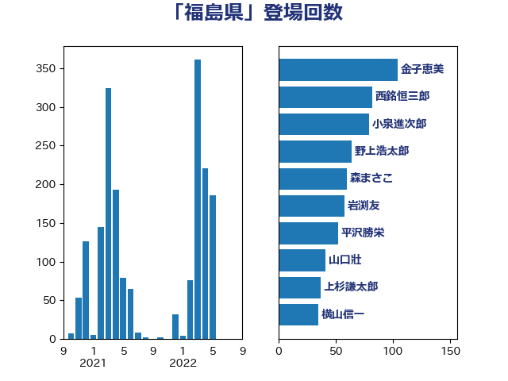

単語「福島県」

| 金子恵美 | 立憲民主党 | 104 回 |
| 西銘恒三郎 | 自由民主党 | 82 回 |
| 小泉進次郎 | 自由民主党 | 79 回 |
| 野上浩太郎 | 自由民主党 | 64 回 |
| 森まさこ | 自由民主党 | 60 回 |
| 岩渕友 | 日本共産党 | 58 回 |
| 平沢勝栄 | 自由民主党 | 52 回 |
| 山口壯 | 自由民主党 | 41 回 |
| 上杉謙太郎 | 自由民主党 | 37 回 |
| 横山信一 | 公明党 | 35 回 |
| 小熊慎司 | 立憲民主党 | 30 回 |
| 若松謙維 | 公明党 | 25 回 |
| 玄葉光一郎 | 立憲民主党 | 24 回 |
| 芳賀道也 | 国民民主党 | 22 回 |
| 細野豪志 | 自由民主党 | 20 回 |
| 紙智子 | 日本共産党 | 19 回 |
| 長友慎治 | 国民民主党 | 19 回 |
| 梶山弘志 | 自由民主党 | 18 回 |
| 近藤昭一 | 立憲民主党 | 18 回 |
| 高橋千鶴子 | 日本共産党 | 18 回 |
| 萩生田光一 | 自由民主党 | 17 回 |
| 菅家一郎 | 自由民主党 | 16 回 |
| 岸田文雄 | 自由民主党 | 15 回 |
| 山崎誠 | 立憲民主党 | 13 回 |
| 音喜多駿 | 日本維新の会 | 13 回 |
| 小沢雅仁 | 立憲民主党 | 12 回 |
| 石井正弘 | 自由民主党 | 12 回 |
| 岡本あき子 | 立憲民主党 | 11 回 |
| 國重徹 | 公明党 | 10 回 |
| 笠井亮 | 日本共産党 | 10 回 |
| 赤羽一嘉 | 公明党 | 10 回 |
| 丸川珠代 | 自由民主党 | 9 回 |
| 早坂敦 | 日本維新の会 | 9 回 |
| 石井苗子 | 日本維新の会 | 9 回 |
| 足立敏之 | 自由民主党 | 9 回 |
| 岸真紀子 | 立憲民主党 | 8 回 |
| 徳永エリ | 立憲民主党 | 8 回 |
| 朝日健太郎 | 自由民主党 | 8 回 |
| 福島みずほ | 社会民主党 | 8 回 |
| 菅義偉 | 自由民主党 | 8 回 |
| 山際大志郎 | 自由民主党 | 7 回 |
| 福島伸享 | 無所属 | 7 回 |
| 西村康稔 | 自由民主党 | 7 回 |
| 馬場雄基 | 立憲民主党 | 7 回 |
| 中村裕之 | 自由民主党 | 6 回 |
| 務台俊介 | 自由民主党 | 6 回 |
| 堀内詔子 | 自由民主党 | 6 回 |
| 大口善徳 | 公明党 | 6 回 |
| 江島潔 | 自由民主党 | 6 回 |
| 空本誠喜 | 日本維新の会 | 6 回 |
| 荒井優 | 立憲民主党 | 6 回 |
| 藤原崇 | 自由民主党 | 6 回 |
| 阿部知子 | 立憲民主党 | 6 回 |
| 宮本周司 | 自由民主党 | 5 回 |
| 庄子賢一 | 公明党 | 5 回 |
| 杉久武 | 公明党 | 5 回 |
| 梅村みずほ | 日本維新の会 | 5 回 |
| 津島淳 | 自由民主党 | 5 回 |
| 浅野哲 | 国民民主党 | 5 回 |
| 片山大介 | 日本維新の会 | 5 回 |
| 田名部匡代 | 立憲民主党 | 5 回 |
| 田村貴昭 | 日本共産党 | 5 回 |
| 畦元将吾 | 自由民主党 | 5 回 |
| 竹内真二 | 公明党 | 5 回 |
| 赤澤亮正 | 自由民主党 | 5 回 |
| 進藤金日子 | 自由民主党 | 5 回 |
| 鎌田さゆり | 立憲民主党 | 5 回 |
| 高橋光男 | 公明党 | 5 回 |
| 三浦信祐 | 公明党 | 4 回 |
| 塩田博昭 | 公明党 | 4 回 |
| 安達澄 | 無所属 | 4 回 |
| 室井邦彦 | 日本維新の会 | 4 回 |
| 後藤茂之 | 自由民主党 | 4 回 |
| 横沢高徳 | 立憲民主党 | 4 回 |
| 清水貴之 | 日本維新の会 | 4 回 |
| 穂坂泰 | 自由民主党 | 4 回 |
| 足立康史 | 日本維新の会 | 4 回 |
| 金子恭之 | 自由民主党 | 4 回 |
| 佐々木さやか | 公明党 | 3 回 |
| 冨樫博之 | 自由民主党 | 3 回 |
| 加藤勝信 | 自由民主党 | 3 回 |
| 吉川ゆうみ | 自由民主党 | 3 回 |
| 嘉田由紀子 | 無所属 | 3 回 |
| 山口那津男 | 公明党 | 3 回 |
| 川田龍平 | 立憲民主党 | 3 回 |
| 末松信介 | 自由民主党 | 3 回 |
| 武部新 | 自由民主党 | 3 回 |
| 河野義博 | 公明党 | 3 回 |
| 清水真人 | 自由民主党 | 3 回 |
| 牧島かれん | 自由民主党 | 3 回 |
| 神谷裕 | 立憲民主党 | 3 回 |
| 三木亨 | 自由民主党 | 2 回 |
| 中野洋昌 | 公明党 | 2 回 |
| 中野英幸 | 自由民主党 | 2 回 |
| 亀岡偉民 | 自由民主党 | 2 回 |
| 伊東信久 | 日本維新の会 | 2 回 |
| 伊藤渉 | 公明党 | 2 回 |
| 佐藤正久 | 自由民主党 | 2 回 |
| 吉田忠智 | 立憲民主党 | 2 回 |
| 国定勇人 | 自由民主党 | 2 回 |
| 小宮山泰子 | 立憲民主党 | 2 回 |
| 小森卓郎 | 自由民主党 | 2 回 |
| 小野田紀美 | 自由民主党 | 2 回 |
| 山下芳生 | 日本共産党 | 2 回 |
| 山本順三 | 自由民主党 | 2 回 |
| 山添拓 | 日本共産党 | 2 回 |
| 岩谷良平 | 日本維新の会 | 2 回 |
| 平口洋 | 自由民主党 | 2 回 |
| 平木大作 | 公明党 | 2 回 |
| 斉藤鉄夫 | 公明党 | 2 回 |
| 新妻秀規 | 公明党 | 2 回 |
| 木村英子 | れいわ新選組 | 2 回 |
| 本村伸子 | 日本共産党 | 2 回 |
| 枝野幸男 | 立憲民主党 | 2 回 |
| 森山浩行 | 立憲民主党 | 2 回 |
| 河西宏一 | 公明党 | 2 回 |
| 浜田聡 | NHK党 | 2 回 |
| 牧野たかお | 自由民主党 | 2 回 |
| 猪口邦子 | 自由民主党 | 2 回 |
| 田村憲久 | 自由民主党 | 2 回 |
| 石井章 | 日本維新の会 | 2 回 |
| 笹川博義 | 自由民主党 | 2 回 |
| 篠原豪 | 立憲民主党 | 2 回 |
| 舟山康江 | 国民民主党 | 2 回 |
| 葉梨康弘 | 自由民主党 | 2 回 |
| 谷公一 | 自由民主党 | 2 回 |
| 近藤和也 | 立憲民主党 | 2 回 |
| 野中厚 | 自由民主党 | 2 回 |
| 長坂康正 | 自由民主党 | 2 回 |
| 高橋はるみ | 自由民主党 | 2 回 |
| 上田清司 | 国民民主党 | 1 回 |
| 中川宏昌 | 公明党 | 1 回 |
| 中川郁子 | 自由民主党 | 1 回 |
| 二階俊博 | 自由民主党 | 1 回 |
| 井林辰憲 | 自由民主党 | 1 回 |
| 仁木博文 | 無所属 | 1 回 |
| 佐藤啓 | 自由民主党 | 1 回 |
| 北村経夫 | 自由民主党 | 1 回 |
| 古賀友一郎 | 自由民主党 | 1 回 |
| 吉川赳 | 無所属 | 1 回 |
| 国光あやの | 自由民主党 | 1 回 |
| 坂井学 | 自由民主党 | 1 回 |
| 坂本哲志 | 自由民主党 | 1 回 |
| 堀井巌 | 自由民主党 | 1 回 |
| 大串博志 | 立憲民主党 | 1 回 |
| 大島敦 | 立憲民主党 | 1 回 |
| 宗清皇一 | 自由民主党 | 1 回 |
| 小渕優子 | 自由民主党 | 1 回 |
| 山本博司 | 公明党 | 1 回 |
| 岡本三成 | 公明党 | 1 回 |
| 本田太郎 | 自由民主党 | 1 回 |
| 杉田水脈 | 自由民主党 | 1 回 |
| 村井英樹 | 自由民主党 | 1 回 |
| 松沢成文 | 日本維新の会 | 1 回 |
| 武田良太 | 自由民主党 | 1 回 |
| 比嘉奈津美 | 自由民主党 | 1 回 |
| 池下卓 | 日本維新の会 | 1 回 |
| 池畑浩太朗 | 日本維新の会 | 1 回 |
| 泉健太 | 立憲民主党 | 1 回 |
| 熊谷裕人 | 立憲民主党 | 1 回 |
| 片山さつき | 自由民主党 | 1 回 |
| 田村まみ | 国民民主党 | 1 回 |
| 田村智子 | 日本共産党 | 1 回 |
| 矢倉克夫 | 公明党 | 1 回 |
| 磯崎仁彦 | 自由民主党 | 1 回 |
| 神田潤一 | 自由民主党 | 1 回 |
| 福山哲郎 | 立憲民主党 | 1 回 |
| 秋野公造 | 公明党 | 1 回 |
| 笠浩史 | 無所属 | 1 回 |
| 緑川貴士 | 立憲民主党 | 1 回 |
| 美延映夫 | 日本維新の会 | 1 回 |
| 若宮健嗣 | 自由民主党 | 1 回 |
| 茂木敏充 | 自由民主党 | 1 回 |
| 西田昌司 | 自由民主党 | 1 回 |
| 辻元清美 | 立憲民主党 | 1 回 |
| 遠藤良太 | 日本維新の会 | 1 回 |
| 里見隆治 | 公明党 | 1 回 |
| 野田聖子 | 自由民主党 | 1 回 |
| 金田勝年 | 自由民主党 | 1 回 |
| 鈴木俊一 | 自由民主党 | 1 回 |
| 鈴木憲和 | 自由民主党 | 1 回 |
| 階猛 | 立憲民主党 | 1 回 |
| 青木一彦 | 自由民主党 | 1 回 |
| 鰐淵洋子 | 公明党 | 1 回 |
| 齋藤健 | 自由民主党 | 1 回 |